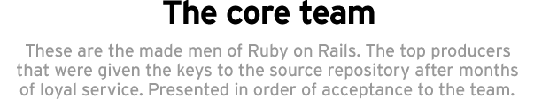
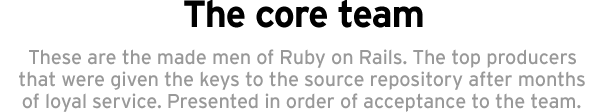

David Heinemeier Hansson (dhh) extracted Ruby on Rails from his work on Basecamp. He released the framework as open source in July of 2004, but didn't share the commit rights until February of 2005. Among the core team, he's infamous for his ruthless delegation, which is often executed as a request to "Please Do Investigate". He's a partner at 37signals and an opinionated blogger.
Jeremy Kemper (bitsweat) is a programmer at 37signals hailing from Pasadena, California. Hot on the heels of DHH, he has been the most active contributor to Rails. He's knee deep in pretty much all aspects of the framework and one of the top batters against new, incoming tickets.
Michael Koziarski (nzkoz) is a software consultant based in Wellington, New Zealand. After a successful stint as an enterprise Java developer, he switched to rails shortly after the first public release. He’s a contributor to The Rails Way and maintains a personal blog.
Pratik Naik (lifo) stumbled upon Rails back in 2006 while in search for a better web framework after 2 painful years with perl/mod_perl. He hasn't looked back since then. Currently located in London, he is an employee of 37signals and maintains a personal blog at http://m.onkey.org.
Josh Peek (joshp) has been working with almost all parts of Rails. A lot of work spent on performance and thread safety for Action Pack. He's the latest addition to the team. Josh is an employee of 37signals.

Yehuda Katz (wycats) is a programmer at Engine Yard, with a background in accounting, journalism, and twelve other things that would surprise you. He grew up in New York, and now lives in sunny California. He's been working with Rails since before 1.0, is a Core Team Member on the jQuery project, and was the lead developer on the Merb project. In the time not spent working on open source, he writes about open source, and talks about open source. Go figure.
José Valim (josevalim) is the lead-developer and co-founder of Plataforma Tec. He started working with Rails in late 2006 and began contributing actively after his Google Summer of Code project in 2009. After his Machine Learning master's degree in Italy, he's been flying constantly between Brazil and Poland. Some say that it is his "eureka" time to code and bring new open-source projects to life. Check for yourself what he's up to on his company's blog.

Until Carl Lerche (carllerche) discovered Ruby on Rails in 2005 he thought he would never do web development again. It was Ruby that lured him back into programming and open source development. Currently, he spends much of his time at Engine Yard contributing to Rails, and in his free time, to many side projects..
Rails core members who are no longer active in the day-to-day stuff have been immortalized as core alumni.
See also The Rails activist team who empowers and supports Rails users around the world.